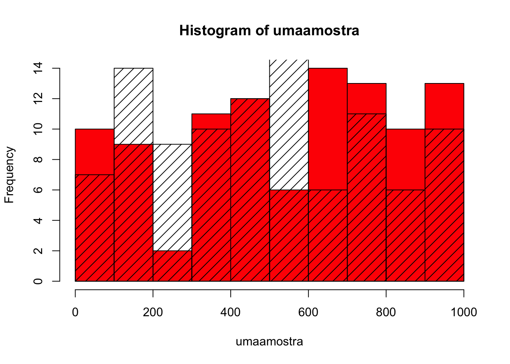
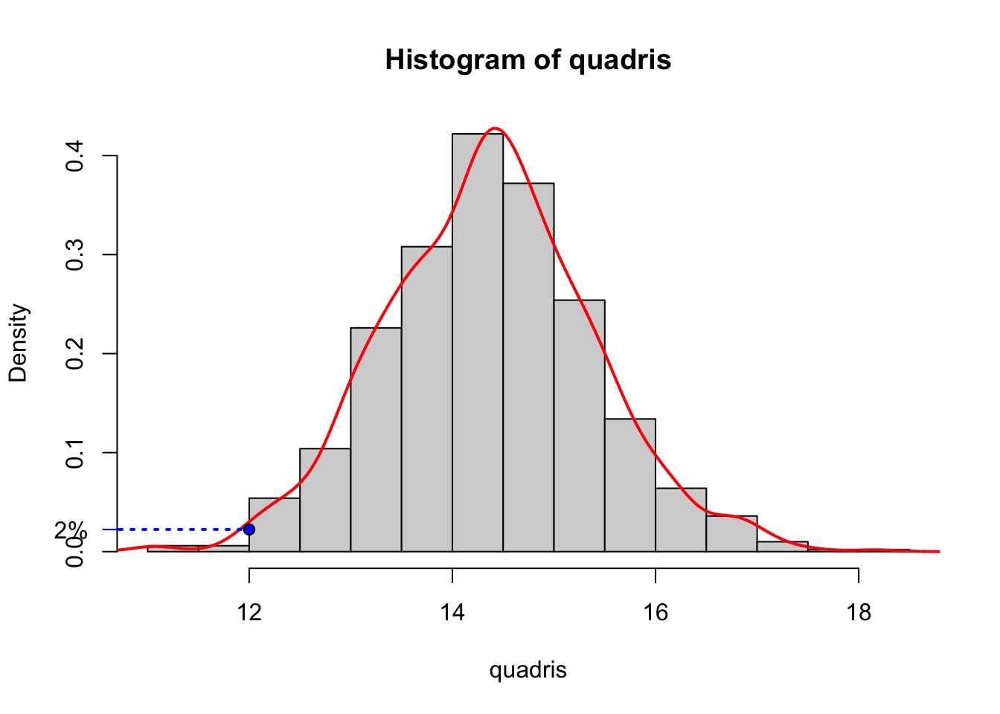

9 Amostragens aleatórias
9.1 Funções para gerar permutações e simular dados
A função sample() aleatoriza valores em um vetor, com ou sem repetição, ou amostra um certo número de valores aleatoriamente de um vetor de valores.
## [1] 1 2 3 4 5 6 7 8 9 10 11 12 13 14 15 16 17 18 19 20## [1] 19 12 14 4 2 15 20 6 17 10 8 3 1 16 18 5 11 7 13 9## [1] 16 8 2 14 4 6 13 15 17 18 3 1 12 9 20 19 7 11 10 5## [1] 19 17 8 4 5 11 2 13 18 15 9 16 10 12 14 3 7 6 1 20| 1 | 2 | 3 | 4 | 5 | 6 | 7 | 8 | 9 | 10 | 11 | 12 | 13 | 14 | 15 | 16 | 17 | 18 | 19 | 20 |
|---|---|---|---|---|---|---|---|---|---|---|---|---|---|---|---|---|---|---|---|
| 1 | 1 | 1 | 1 | 1 | 1 | 1 | 1 | 1 | 1 | 1 | 1 | 1 | 1 | 1 | 1 | 1 | 1 | 1 | 1 |
| 1 | 2 | 3 | 4 | 5 | 6 | 7 | 8 | 9 | 10 | 11 | 12 | 13 | 14 | 15 | 16 | 17 | 18 | 19 | 20 |
|---|---|---|---|---|---|---|---|---|---|---|---|---|---|---|---|---|---|---|---|
| 1 | 1 | 1 | 1 | 1 | 1 | 1 | 1 | 1 | 1 | 1 | 1 | 1 | 1 | 1 | 1 | 1 | 1 | 1 | 1 |
| 1 | 2 | 3 | 4 | 5 | 6 | 7 | 8 | 9 | 10 | 13 | 15 | 17 | 18 | 20 |
|---|---|---|---|---|---|---|---|---|---|---|---|---|---|---|
| 1 | 1 | 1 | 1 | 1 | 3 | 2 | 1 | 1 | 1 | 1 | 1 | 1 | 2 | 2 |
# ele repetiu alguns valores aleatoriamente
table(sample(v1, replace = TRUE)) # vai ser diferente toda vez que voce executa| 1 | 2 | 4 | 5 | 6 | 9 | 12 | 14 | 16 | 17 | 18 | 20 |
|---|---|---|---|---|---|---|---|---|---|---|---|
| 3 | 2 | 1 | 1 | 2 | 2 | 1 | 1 | 1 | 2 | 2 | 2 |
## [1] 20## [1] 20## [1] 20| A | B | C | D | E | F | G | H | I | J | K | L | M | N | O | P | Q | R | S | T | U | V | W | X | Y | Z |
|---|---|---|---|---|---|---|---|---|---|---|---|---|---|---|---|---|---|---|---|---|---|---|---|---|---|
| 1 | 1 | 1 | 1 | 1 | 1 | 1 | 1 | 1 | 1 | 1 | 1 | 1 | 1 | 1 | 1 | 1 | 1 | 1 | 1 | 1 | 1 | 1 | 1 | 1 | 1 |
| A | B | D | E | F | G | I | J | K | M | Q | R | S | X | Y | Z |
|---|---|---|---|---|---|---|---|---|---|---|---|---|---|---|---|
| 1 | 1 | 2 | 1 | 1 | 1 | 1 | 1 | 2 | 1 | 1 | 5 | 3 | 1 | 1 | 3 |
Amostraremos N valores de um vetor qualquer:
# agora amostra um número qualquer de valores de um vetor qualquer:
umvetor <- seq(from = 0, to = 1000, by = 0.1)
length(umvetor)## [1] 10001## [1] 0.0 0.1 0.2 0.3 0.4 0.5 0.6 0.7 0.8 0.9# agora amostra 100 valores desse vetor que tem 9991 valores
umaamostra <- sample(umvetor, size = 100, replace = T)
# entao isso deve ser verdadeiro
length(umaamostra) == 100## [1] TRUE## [1] 144.8 886.8 993.6 200.0 746.7 904.8 688.3 848.2 97.6 732.1# histograma da amostra
hist(umaamostra, col = "red")
# note que a distribuição é uniforme, qualquer valor tem a mesma chance de ser amostrado
# faco outra vez e adiciono
outraamostra <- sample(umvetor, size = 100, replace = T)
# adiciono ao histograma anterior
hist(outraamostra, density = 10, add = T, col = "black")
9.2 Distribuições aleatórias
O R disponibiliza um conjunto um conjunto de funções para gerar densidade, distribuição cumulativa, quantis e geração aleatória de variáveis com diferentes distribuições de probabilidade (veja a seção Para saber mais para mais informações).
Aqui vamos conhecer as funções que geram variáveis aleatórias para duas distribuições probabilísticas:
# veja no R o help para as funções para as diferentes distribuições disponíveis no R.
?Distributions9.2.1 Distribuição Normal
Segundo as companhias aéreas dos EUA, a largura dos quadris dos homens norte-americanos segue uma curva normal, com média de 14.4 polegadas, e desvio-padrão de 1 polegada.
9.2.1.1 rnorm()
Esta função permite gerar essa distribuição de valores aleatórios que seguem uma distribuição normal se soubermos a média e o desvio padrão.
amedia <- 14.4
osd <- 1
# vamos gerar 1000 valores aleatórios com essa distribuição
quadris <- rnorm(n = 1000, mean = amedia, sd = osd)
# visualizando essa distribuição de valores
hist(quadris)
# ou visualizando a densidade probabilística dessa distribuição
hist(quadris, probability = T)
# a linha da densidade
lines(density(quadris), col = "red", lwd = 2)
9.2.1.2 pnorm()
Esta função permite responder à pergunta:
“Qual percentual de pessoas não cabe em um assento de 15 polegadas?”
# qual o percentil/quantil da distribuição que é maior que 15 polegadas
# quem não cabe no assento?
qMaior15in <- pnorm(q = 15, mean = 14.4, sd = 1, lower.tail = F)
# note o argumento lower.tail=F (você quer apenas o percentil que está acima desse valor)
# ca. de 27%
qMaior15in## [1] 0.2742531print(paste(round(qMaior15in * 100, 0), "% dos americanos não cabem em um assento de 15polegadas", sep = ""))## [1] "27% dos americanos não cabem em um assento de 15polegadas"# vamos visualizar isso
x <- sort(quadris) # ordenamos os quadris
y <- dnorm(x, mean = amedia, sd = 1) # calculamos a densidade probabilística desses valores
plot(x, y, type = "l", lwd = 2, col = "black", ylab = "Densidade Probabilística", xlab = "Quadris de americanos (inches)") # plotamos isso e temos nossa curva normal
# agora fazemos o mesmo para os quadris que satisfazem a condicao
abline(v = 15, lwd = 2, col = "blue") # o quadril da pergunta
xx <- sort(quadris[quadris >= 15])
yy <- dnorm(xx, mean = amedia, sd = 1)
# adicionamos isso na forma de um polígono
# coordenadas X do polígono (note que adicionei valores para poder fechar o polígono)
xxp <- c(15, xx, max(xx), 15)
# e adiciono também no eixo y
yyp <- c(0, yy, 0, 0)
# desenho o polígono correspondente
polygon(xxp, yyp, col = "red")
9.2.1.3 qnorm()
Esta função permite responder à pergunta:
Qual largura de assento garante que 95% da população caberá?
# agora fazemos o inverso da função pnorm, ao inves de informar o quantil,
# informamos o percentil
qnorm(p = 0.95, mean = 14.4, sd = 1)## [1] 16.04485# este é o tamanho do assento que inclui 95% dos valores
# numa distribuição normal com essa média e esse desvio padrão
tamanho95 <- qnorm(p = 0.95, mean = 14.4, sd = 1)
# graficando isso?
hist(quadris, prob = T)
# limite de tamanho
abline(v = tamanho95, col = "blue", lwd = 2, lty = "dashed")
# plota valores que estao dentro dessa distribuicao
hist(quadris[quadris < tamanho95], prob = T, add = T, col = "red")
9.2.1.4 dnorm()
A função dnorm() gera a densidade probabilística para um conjunto de valores, tendo em vista uma distribuição normal de mesma média e mesmo desvio padrão.
Podemos responder à pergunta:
Qual a densidade probabilística para um valor de quadril de 12 polegadas? Ou seja, qual a probabilidade de amostrar na população uma pessoa com quadril de 12 in?
## [1] 0.02239453# mostra na figura
# plota a densidade probabilística
hist(quadris, prob = T)
# coloca a linha
lines(density(quadris), col = "red", lwd = 2)
# adicona um ponto que mostra a probabilidade do valor
points(x = 12, y = dq12, pch = 21, bg = "blue")
segments(0, dq12, 12, dq12, lty = "dotted", col = "blue", lwd = 2)
axis(side = 2, at = dq12, labels = paste(round(dq12 * 100, 0), "%", sep = ""), line = NULL, las = 2, col = "blue")